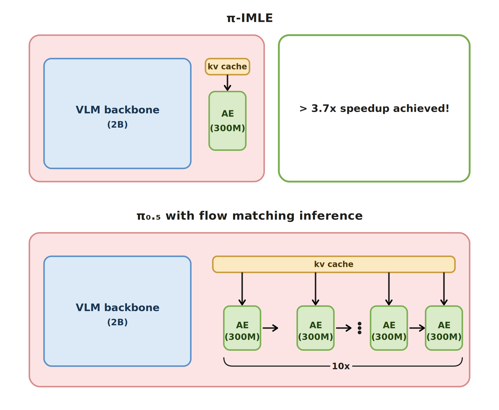
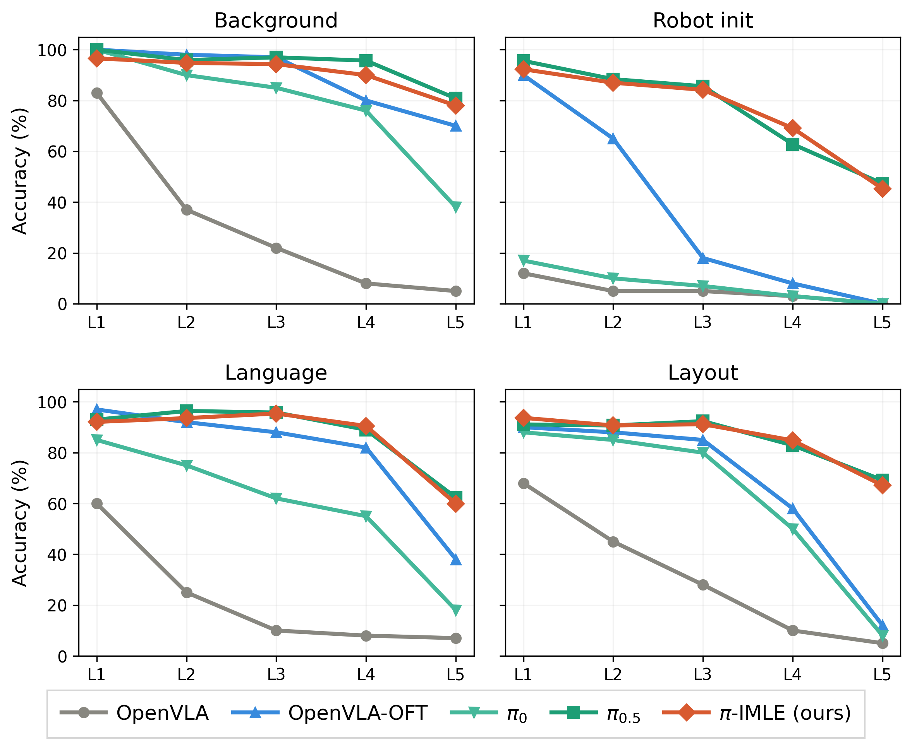

IMLE-VLA
Fast Single-Step Action Generation for Vision-Language-Action Policies
IEEE/RSJ International Conference on Intelligent Robots and Systems (IROS) 2026

Abstract
Vision-language-action (VLA) policies leverage pretrained vision-language backbones for strong cross-task generalization, but their iterative action heads (e.g. 10-step flow matching in π0.5) create an inference bottleneck that causes stop-and-go robot movement.
IMLE-VLA replaces the iterative action head with a single-step conditional generator trained via Implicit Maximum Likelihood Estimation (cIMLE). cIMLE provably preserves multimodal action coverage—avoiding mode collapse—while eliminating multi-step sampling entirely. Applied to π0.5, IMLE-VLA increases inference frequency 3.67× (55 Hz vs 15 Hz), enabling up to 11× higher action throughput. On the 40-task LIBERO benchmark it achieves the highest average success rate (98.0%). Real-world Franka Panda experiments show smoother motion (2.2×–3.0× lower jerk) and 3.9×–6.6× lower VLA wall-clock per episode, outperforming π0.5 on every task.
The Speed Story
The core bottleneck in VLAs like π0.5 is algorithmic, not hardware: the 10-step flow-matching loop imposes a ceiling that system-level optimizations alone cannot break. Porting π0.5 from JAX to PyTorch+compile or hand-tuned Triton kernels yields only modest gains (20–25 Hz). IMLE-VLA sidesteps this entirely by generating actions in one forward pass, reaching 55 Hz—a 3.67× increase.

Inference Frequency (Hz)
VLA forward passes per second (NVIDIA L40S). The first three bars are all π0.5 under different system-level optimizations — faster runtimes help, but the iterative denoising loop caps the gains. IMLE-VLA removes that loop entirely, reaching 55 Hz (3.67×).
Action Throughput (actions/sec)
Throughput = inference frequency × execution horizon H. IMLE-VLA’s single-step generation compounds with a longer horizon, increasing action throughput from 5.5× to 11× over π0.5.
VLA-Only Wall Clock per Episode
How do faster inference and higher throughput translate to actual task completion? VLA-WC measures the total VLA compute time per successful episode (excluding robot execution and other non-inference overhead). Lower is better.
Simulation (LIBERO)
| Method | VLA-WC (s) ↓ | Faster (×) ↑ |
|---|---|---|
| IMLE-VLA (Ours) | 0.10 | 10.3× |
| π0.5 (Baseline) | 1.03 | 1.0× |
Real Robot
| Task | Ours (s) ↓ | π0.5 (s) ↓ | Faster (×) ↑ |
|---|---|---|---|
| Pineapple in bowl | 18.56 | 123.0 | 6.6× |
| Swap pineapple & cube | 31.1 | 178.3 | 5.7× |
| Pineapple in cabinet | 99.4 | 389.4 | 3.9× |
| Pineapple on moving plate | 16.7 | 89.5 | 5.4× |
LIBERO-Plus: Robustness Under Distribution Shift
Robustness under distribution shift. LIBERO-Plus applies systematic test-time perturbations across 4 axes — background, robot initial state, language, and layout — at 5 severity levels (L1–L5), stress-testing each policy as conditions drift further from training.
IMLE-VLA retains π0.5's robustness across every axis and severity, while baselines collapse as severity increases. OpenVLA-OFT's L1 regression head folds to the median mode under shift, losing diversity exactly when it's most needed; cIMLE instead enforces mode coverage by construction, so IMLE-VLA inherits π0.5's multimodal action distribution while still generating actions in a single forward pass.

Real-World Videos
We evaluate on a Franka Emika Panda with an NVIDIA A6000, using two camera views (wrist + scene). Both policies are trained on DROID and deployed zero-shot on four tabletop manipulation tasks spanning single-step, multi-step, and dynamic-reactivity categories. π0.5 runs at 15 Hz (H=8); IMLE-VLA runs at 55 Hz (H=12), still yielding a shorter wall-clock replan interval.
Motion quality. Across all four tasks, IMLE-VLA produces noticeably smoother motion. The faster inference minimizes robot idle time, while the longer execution horizon reduces replanning discontinuities. Together these eliminate the visible stop-wait-execute pauses of π0.5. We quantify this via proprioceptive jerk — the third finite difference of the measured joint positions (7 arm joints), a standard smoothness proxy where lower is better. IMLE-VLA reduces mean jerk by 2.2×–3.0× across all four tasks.
Task — Pineapple on a Moving Plate
Pineapple on a Moving Plate. The plate is driven by a remote-controlled car, so the target is in continuous motion. Success requires the policy to close the perception–action loop quickly and continuously track the plate while reaching. IMLE-VLA’s 55 Hz single-step inference acts on fresh observations and lands the pineapple on the moving target. π0.5 at 15 Hz acts on stale observations and repeatedly reaches toward outdated locations, missing the plate.
IMLE-VLA (Ours) success
Tracks the moving plate continuously and places the pineapple on target.
π0.5 (Baseline) failure
Acts on stale observations and reaches toward outdated plate positions.
Static Task Videos
Task 1 — Swap Pineapple & Cube multi-step
Remove pineapple from bowl, then place the red cube inside. Side-by-side: π0.5 (left) vs IMLE-VLA (right).
Task 2 — Pineapple in Bowl single-step
Grasp a squishy pineapple and place it into a bowl. Side-by-side: π0.5 (left) vs IMLE-VLA (right).
Task 3 — Pineapple in Cabinet multi-step
Pick up pineapple, place inside cabinet, close the door. Side-by-side: π0.5 (left) vs IMLE-VLA (right).
Benchmarks
We report benchmark results in table form only. First we show real-world robot success outcomes, followed by LIBERO simulation performance.
Real-World Robot Results
Success counts out of 20 episodes on a Franka Emika Panda (zero-shot deployment). Jerk (×) is the ratio of π0.5’s mean proprioceptive jerk to ours (higher = smoother motion relative to the baseline). IMLE-VLA outperforms π0.5 on every task while producing 2.2×–3.0× lower jerk.
| Task | IMLE-VLA (Ours) ↑ | π0.5 ↑ | Jerk (×) ↑ |
|---|---|---|---|
| Pineapple in bowl | 19/20 | 15/20 | 2.7× |
| Swap pineapple & cube | 18/20 | 15/20 | 2.2× |
| Pineapple in cabinet | 15/20 | 12/20 | 3.0× |
| Pineapple on moving plate | 16/20 | 12/20 | 2.7× |
LIBERO Simulation Benchmark
LIBERO comprises 40 tabletop manipulation tasks across four suites (Spatial, Object, Goal, Long) evaluated over 50 episodes each. IMLE-VLA achieves the highest average success rate (98.0%) among all compared methods while simultaneously leading in inference frequency (3.67× π0.5). No other method leads in both.
| Group | Model | H | Spatial | Object | Goal | Long | Avg ↑ | Inf. (×) ↑ |
|---|---|---|---|---|---|---|---|---|
| Iterative Action Head | π0.5 | 10 | 97.2 | 99.0 | 97.8 | 96.0 | 97.5 | 1.0 |
| π0.5 | 30 | 95.0 | 98.0 | 96.2 | 95.2 | 96.1 | 1.0 | |
| π0 | – | 96.8 | 98.8 | 95.8 | 85.2 | 94.2 | 1.12 | |
| Autoregressive VLA | π0+FAST | – | 96.4 | 96.8 | 88.6 | 60.2 | 85.5 | — |
| OpenVLA-OFT | – | 95.2 | 94.2 | 95.2 | 93.2 | 94.5 | 0.69 | |
| Reducing Model Size | CogVLA | – | 99.0 | 99.0 | 97.0 | 95.0 | 97.0 | 0.8 |
| LightVLA | – | 98.0 | 98.0 | 98.0 | 95.0 | 97.0 | 1.2 | |
| SmolVLA | – | 90.0 | 96.0 | 92.0 | 71.0 | 87.0 | 1.0 | |
| Layer Distillation | Shallow-π0.5-L9 | – | 99.0 | 98.0 | 97.0 | 93.0 | 97.0 | 1.7 |
| Shallow-π0.5-L6 | – | 98.0 | 96.0 | 94.0 | 90.0 | 95.0 | 2.3 | |
| Single-Step (ours) | IMLE-VLA | 10 | 98.0 | 99.8 | 98.2 | 96.0 | 98.0 | 3.67 |
| IMLE-VLA | 30 | 97.2 | 99.0 | 96.2 | 95.8 | 97.1 | 3.67 |
Success rates (%) on four LIBERO suites, 50 episodes per task. H = execution horizon. Inf. (×) = frequency ratio vs π0.5. Best in bold, second-best underlined.